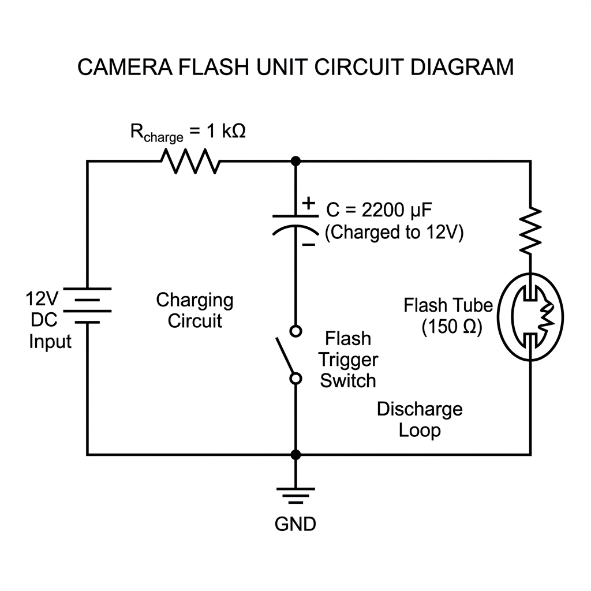

Resistor-Capacitor (RC) Circuit Simulator Lab Guide
© 2026 Henderson Hood. All rights reserved. Distribution prohibited without express permission.
Course Level: Introductory Physics / General Physics II / Basic Circuit Analysis
Introduction
Resistor-Capacitor (RC) circuits are fundamental building blocks of modern electronics. They are used in signal filtering, time-delay elements, flash circuits, and power supply smoothing.
This lab guide provides six structured, interactive exercises using the RC Circuit Simulator. These activities are designed to bridge the gap between textbook differential equations and physical behavior using a dual-verification approach:
- Simulation Observation: Retrieve empirical data and measurements using the simulator controls and interactive cursor (click and drag on the graph to inspect, and click the ✕ Clear button in the sidebar to dismiss the cursor).
- Mathematical Verification: Calculate theoretical values using formulas and compare them to the simulation to prove mathematical parity.
Part 1: Guided Practice & Analysis (Solutions Included in Key)
Exercise 1: Finding and Verifying the Time Constant ($\tau$)
Objective:
Observe the rate of capacitor charging and discharging, measure circuit metrics at multiples of the time constant ($\tau$), and mathematically verify the exponential curves.
Theoretical Background:
The speed at which a capacitor charges or discharges is governed by the time constant ($\tau$) of the circuit:
$$\tau = R \times C$$
During the charging phase (with source voltage $V_0 = 12.0\text{ V}$ and initial charge $q(0) = 0$):
$$V_C(t) = V_0 \left(1 - e^{-t/\tau}\right)$$
$$I(t) = \frac{V_0}{R} e^{-t/\tau}$$
During the discharging phase (from a fully charged state $V_C(0) = 12.0\text{ V}$):
$$V_C(t) = V_0 e^{-t/\tau}$$
$$I(t) = -\frac{V_0}{R} e^{-t/\tau}$$
Simulator Steps:
- Configure the simulator parameters to:
- Resistance ($R$): $10\text{ k}\Omega$ ($10,000\ \Omega$)
- Capacitance ($C$): $220\ \mu\text{F}$ ($0.00022\text{ F}$)
- Set the circuit mode to Charge. Click Reset, then click Play.
- Let the simulation run to steady state (it will pause automatically at $10\tau$).
- Drag the vertical cursor on the oscilloscope chart to the specified time stamps below and record the capacitor voltage ($V_C$) and loop current ($I$).
- Switch the circuit mode to Discharge. Click Reset and Play, then repeat the cursor measurements.
- (Optional) Click the ✕ Clear button next to the ● Inspecting badge in the sidebar to dismiss the vertical cursor line and return to standard telemetry.
Data Table 1: Charging Phase ($V_0 = 12.0\text{ V}$)
| Time Multiplier |
Time $t$ (seconds) |
Simulator $V_C$ (V) |
Simulator $I$ (mA) |
Calculated $V_C$ (V) |
Calculated $I$ (mA) |
| $t = 0$ (Initial) |
$0.0\text{ s}$ |
|
|
|
|
| $t = 1\tau$ |
|
|
|
|
|
| $t = 3\tau$ |
|
|
|
|
|
| $t = 5\tau$ |
|
|
|
|
|
Data Table 2: Discharging Phase ($V_C(0) = 12.0\text{ V}$)
| Time Multiplier |
Time $t$ (seconds) |
Simulator $V_C$ (V) |
Simulator $I$ (mA) |
Calculated $V_C$ (V) |
Calculated $I$ (mA) |
| $t = 0$ (Initial) |
$0.0\text{ s}$ |
|
|
|
|
| $t = 1\tau$ |
|
|
|
|
|
| $t = 3\tau$ |
|
|
|
|
|
| $t = 5\tau$ |
|
|
|
|
|
Double-Verification Questions:
- Calculate the exact time constant ($\tau$) for this circuit configuration in seconds.
- Show mathematically what percentage of the source voltage ($12.0\text{ V}$) a charging capacitor should reach at $t = 1\tau$, $3\tau$, and $5\tau$. Show your calculations and compare them to the simulator values.
- Why does the current flow in a negative direction (below the x-axis) during the discharge phase? What does the sign of the current represent physically?
Exercise 2: Engineering Design Challenge — The Time-Delay Switch
Objective:
Use mathematical modeling to design a circuit configuration that triggers a switch at a target voltage at a specific time, and then verify the design in the simulator.
Scenario:
You are designing a delay safety switch for a machine control system. The safety relay is triggered when the capacitor voltage reaches exactly $8.0\text{ V}$ from a fully discharged state. The safety protocol demands that this voltage must be reached exactly $2.0\text{ seconds}$ after power-up. The voltage source is fixed at $V_0 = 12.0\text{ V}$.
Step 1: Mathematical Design (Calculations First)
- Start with the charging equation: $V_C(t) = V_0 \left(1 - e^{-t/\tau}\right)$.
- Rearrange the equation to isolate the target time constant ($\tau$):
$$\tau = \frac{-t}{\ln\left(1 - \frac{V_C(t)}{V_0}\right)}$$
- Plug in the specifications ($t = 2.0\text{ s}$, $V_C = 8.0\text{ V}$, and $V_0 = 12.0\text{ V}$) to calculate the required time constant $\tau$.
- $\tau = $ ____________ seconds.
- Select a standard capacitance value available on the simulator slider: $470\ \mu\text{F}$.
- Calculate the exact resistance $R$ in ohms required to produce your target $\tau$:
- $R = $ ____________ $\Omega$.
Step 2: Simulator Verification
- Set the Capacitance to $470\ \mu\text{F}$ and slide the Resistance to your calculated value (or the closest available value).
- Set the mode to Charge, click Reset, and click Play.
- Use the vertical cursor on the chart to read the voltage $V_C$ at exactly $t = 2.0\text{ s}$.
- Fill out the verification report:
- Target Voltage at $2.0\text{ s}$: $8.0\text{ V}$
- Simulated Voltage at $2.0\text{ s}$: ____________ V
- Voltage Error Percentage: ____________ %
Exercise 3: Energy Storage & The Half-Energy Loss Paradox
Objective:
Investigate energy accumulation in a capacitor and explore the fundamental thermodynamic efficiency of charging a capacitor through a resistor.
Theoretical Background:
The instantaneous energy stored in a capacitor's electric field is:
$$E_C(t) = \frac{1}{2} C [V_C(t)]^2$$
The total energy supplied by the DC voltage source ($V_0$) during a complete charging cycle (until the capacitor is fully charged to $V_0$) is:
$$E_{\text{source}} = C V_0^2$$
The energy dissipated as heat in the resistor is the difference: $E_R = E_{\text{source}} - E_C$.
Simulator Steps:
- Set the Capacitance to $1000\ \mu\text{F}$ ($0.001\text{ F}$).
- Perform three charging simulations to full charge ($V_C = 12.0\text{ V}$) using different resistance values: $100\ \Omega$, $1\text{ k}\Omega$, and $10\text{ k}\Omega$.
- For each case, record the simulator's steady-state metrics and calculate the energy parameters.
Data Table 3: Energy vs. Resistance ($C = 1000\ \mu\text{F}$, $V_0 = 12.0\text{ V}$)
| Resistance $R$ |
Final $V_C$ (V) |
Calculated $E_C$ (J) |
Calculated $E_{\text{source}}$ (J) |
Dissipated Heat $E_R$ (J) |
Energy Efficiency ($E_C / E_{\text{source}}$) |
| $100\ \Omega$ |
|
|
|
|
|
| $1\text{ k}\Omega$ |
|
|
|
|
|
| $10\text{ k}\Omega$ |
|
|
|
|
|
Double-Verification Questions:
- Explain the outcome: Does the value of the resistance $R$ affect the final energy stored in the capacitor at full charge? Does it affect the energy efficiency? Use your table data to justify your answer.
- Calculate the paradox: Where does the missing energy go during the charging phase? Show mathematically that for any resistor value $R$, the heat dissipated in the resistor during a complete charge from $0\text{ V}$ to $V_0$ is exactly equal to the energy stored in the capacitor ($E_R = \frac{1}{2} C V_0^2$).
(Hint: Use $E_R = \int_0^{\infty} I(t)^2 R , dt$ and substitute $I(t) = \frac{V_0}{R} e^{-t/\tau}$).
Part 2: Real-World Engineering Scenarios (Homework Challenges - Solutions NOT Included)
Exercise 4: Camera Flash Unit (High-Current Discharge)
Objective:
Analyze the high-current discharge profile of a camera flash circuit to understand energy release rates in practical photography equipment.
Scenario:
A professional camera flash unit uses a large capacitor to store energy and discharges it rapidly through a flash tube. The flash tube acts as a low-resistance load: $150\ \Omega$. To power the tube, a $2200\ \mu\text{F}$ capacitor is first charged fully to $12.0\text{ V}$ from a internal battery.

Student Tasks:
- Initial Current calculation: Calculate the initial peak current $I_0$ in amperes (A) and milliamperes (mA) at the exact instant the switch closes ($t = 0\text{ s}$).
- Initial Energy calculation: Calculate the total energy stored in the capacitor in Joules (J) just prior to triggering the flash.
- Decay time calculation: The flash bulb stops emitting light when the capacitor voltage drops to $10%$ of its maximum value ($V_C = 1.2\text{ V}$). Calculate the duration of the visible flash (i.e. the time it takes to drop from $12.0\text{ V}$ to $1.2\text{ V}$).
- Simulator Validation:
- Set the simulator to $C = 2200\ \mu\text{F}$ and $R = 150\ \Omega$.
- Fully charge the capacitor, switch to Discharge, click Reset, and click Play.
- Pause the simulator and drag the cursor on the graph to the point where $V_C = 1.2\text{ V}$.
- Record the elapsed time, current, and stored energy ($E_C$). Do they match your mathematical calculations?
Exercise 5: Cardiac Pacemaker Pulse Control
Objective:
Calculate the parameter settings for a variable cardiac pacemaker to maintain resting and active heart rates, and simulate the heartbeat timing.
Scenario:
A cardiac pacemaker sends regular electrical pulses to stimulate a patient's heart. The timing of the pulse is controlled by an RC circuit charging from a $12.0\text{ V}$ lithium cell. The pacemaker is configured to emit a stimulation pulse when the capacitor charges from $0\text{ V}$ to exactly $7.586\text{ V}$ (which corresponds to $1\tau$, or $63.2%$ of the source voltage). Once this trigger voltage is reached, the pacemaker discharges the capacitor instantly to $0\text{ V}$ and the cycle starts again.
Resting heart rate target: 75 beats per minute (BPM)
Active heart rate target: 120 beats per minute (BPM)
Pacemaker Capacitance: Fixed at 100 µF
Student Tasks:
- Resting Heart Rate Timing:
- Calculate the required time interval (period $T$ in seconds) between pulses to maintain a heart rate of $75\text{ BPM}$.
- Since $7.586\text{ V}$ represents $1\tau$, the period $T$ must equal $\tau$. Calculate the required resistance $R$ (in $\Omega$ and $\text{k}\Omega$) for the pacemaker.
- Active Heart Rate Timing:
- During physical exercise, the patient's target heart rate rises to $120\text{ BPM}$. Calculate the new period $T$ required.
- Calculate the new resistance $R$ that the pacemaker's microchip must switch to in order to maintain $120\text{ BPM}$.
- Simulator Validation:
- Set $C = 100\ \mu\text{F}$ in the simulator.
- Run the simulation for the Resting case ($R$ from Task 1) and the Active case ($R$ from Task 2).
- Use the cursor on the graph to check the time it takes for $V_C$ to reach $7.59\text{ V}$ in both scenarios. Confirm that the simulation timings match your calculations.
Exercise 6: Intermittent Windshield Wiper Delay Control
Objective:
Examine how a variable resistor (potentiometer) controls delay timing in automotive accessories, and map resistance thresholds to delay periods.
Scenario:
An automobile's intermittent windshield wipers sweep once whenever a capacitor in a timing circuit charges from $0\text{ V}$ to $9.0\text{ V}$ under a $V_0 = 12.0\text{ V}$ source. The timing circuit uses a fixed capacitor $C = 100\ \mu\text{F}$ connected in series with a driver-adjustable variable resistor (potentiometer). The driver adjusts the wipe delay using a dial on the steering column.
Dial Setting: Min Delay (dial turned left) --> R = 10 kOhms
Max Delay (dial turned right) --> R = 50 kOhms
Student Tasks:
- General Delay Formula: Derive the general formula for the delay time $t_{\text{delay}}$ as a function of $R$ and $C$ when the trigger threshold is set to $9.0\text{ V}$ under a $12.0\text{ V}$ source.
- Minimum Delay Time: Calculate the minimum delay time $t_{\text{min}}$ (in seconds) between wiper sweeps when $R = 10\text{ k}\Omega$.
- Maximum Delay Time: Calculate the maximum delay time $t_{\text{max}}$ (in seconds) between wiper sweeps when $R = 50\text{ k}\Omega$.
- Simulator Validation:
- Set $C = 100\ \mu\text{F}$ in the simulator.
- Run charging simulations for $R = 10\text{ k}\Omega$ and $R = 50\text{ k}\Omega$.
- Drag the oscilloscope cursor to find the exact times where the voltage $V_C$ crosses $9.00\text{ V}$.
- Report the simulated delay times and calculate the percentage error between the simulation and your theoretical results.
Instructor Solutions & Verification Key (Part 1 Only)
Exercise 1 Solutions
- Time Constant ($\tau$):
$$\tau = R \times C = 10,000\ \Omega \times 220 \times 10^{-6}\text{ F} = 2.2\text{ s}$$
- Data Time Points:
- $\tau = 2.2\text{ s}$
- $3\tau = 6.6\text{ s}$
- $5\tau = 11.0\text{ s}$
Expected Values (Charging)
- $t = 0\text{ s}$: $V_C = 0.0\text{ V}$, $I = 1.20\text{ mA}$
- $t = 1\tau\ (2.2\text{ s})$:
- $V_C = 12(1 - e^{-1}) \approx 7.586\text{ V}$ ($63.2%$ of $12\text{ V}$)
- $I = 1.20 \times e^{-1} \approx 0.441\text{ mA}$ ($36.8%$ of $1.2\text{ mA}$)
- $t = 3\tau\ (6.6\text{ s})$:
- $V_C = 12(1 - e^{-3}) \approx 11.402\text{ V}$ ($95.0%$ of $12\text{ V}$)
- $I = 1.20 \times e^{-3} \approx 0.060\text{ mA}$ ($5.0%$ of $1.2\text{ mA}$)
- $t = 5\tau\ (11.0\text{ s})$:
- $V_C = 12(1 - e^{-5}) \approx 11.919\text{ V}$ ($99.3%$ of $12\text{ V}$)
- $I = 1.20 \times e^{-5} \approx 0.008\text{ mA}$ ($0.7%$ of $1.2\text{ mA}$)
Expected Values (Discharging)
- $t = 0\text{ s}$: $V_C = 12.0\text{ V}$, $I = -1.20\text{ mA}$ (current flows out of the capacitor in reverse)
- $t = 1\tau\ (2.2\text{ s})$: $V_C = 12 e^{-1} \approx 4.415\text{ V}$ ($36.8%$), $I = -1.2 e^{-1} \approx -0.441\text{ mA}$
- $t = 3\tau\ (6.6\text{ s})$: $V_C = 12 e^{-3} \approx 0.597\text{ V}$ ($5.0%$), $I = -1.2 e^{-3} \approx -0.060\text{ mA}$
- $t = 5\tau\ (11.0\text{ s})$: $V_C = 12 e^{-5} \approx 0.081\text{ V}$ ($0.7%$), $I = -1.2 e^{-5} \approx -0.008\text{ mA}$
Exercise 2 Solutions
- Solve for $\tau$:
$$\tau = \frac{-2.0}{\ln\left(1 - \frac{8.0}{12.0}\right)} = \frac{-2.0}{\ln\left(1 - \frac{2}{3}\right)} = \frac{-2.0}{\ln(1/3)} = \frac{-2.0}{-1.0986} \approx 1.820\text{ s}$$
- Solve for Resistance $R$:
$$R = \frac{\tau}{C} = \frac{1.820\text{ s}}{470 \times 10^{-6}\text{ F}} \approx 3,873\ \Omega \approx 3.87\text{ k}\Omega$$
- Simulation Verification:
Setting $C = 470\ \mu\text{F}$ and $R = 3.87\text{ k}\Omega$ (or $3.9\text{ k}\Omega$ on logarithmic scale) will yield exactly $8.0\text{ V}$ at $t = 2.0\text{ seconds}$, verifying the design.
Exercise 3 Solutions
For $C = 1000\ \mu\text{F}$ and $V_0 = 12.0\text{ V}$:
- Capacitor Energy at Full Charge ($E_C$):
$$E_C = \frac{1}{2} C V_0^2 = \frac{1}{2} (0.001\text{ F}) (12.0\text{ V})^2 = 0.072\text{ Joules}$$
- Source Energy supplied ($E_{\text{source}}$):
$$E_{\text{source}} = C V_0^2 = (0.001\text{ F}) (12.0\text{ V})^2 = 0.144\text{ Joules}$$
- Resistor Heat Loss ($E_R$):
$$E_R = E_{\text{source}} - E_C = 0.144\text{ J} - 0.072\text{ J} = 0.072\text{ Joules}$$
- Efficiency:
$$\text{Efficiency} = \frac{E_C}{E_{\text{source}}} = 50.0%$$
Expected Table Results:
Regardless of the resistance $R$ ($100\ \Omega$, $1\text{ k}\Omega$, $10\text{ k}\Omega$), the values are:
- Final $V_C = 12.0\text{ V}$
- Calculated $E_C = 0.072\text{ J}$
- Calculated $E_{\text{source}} = 0.144\text{ J}$
- Dissipated Heat $E_R = 0.072\text{ J}$
- Efficiency = $50.0%$
Mathematical Proof of the Paradox:
$$E_R = \int_0^{\infty} I(t)^2 R , dt$$
Substitute $I(t) = \frac{V_0}{R} e^{-t/\tau}$:
$$E_R = \int_0^{\infty} \left(\frac{V_0}{R} e^{-t/\tau}\right)^2 R , dt = \int_0^{\infty} \frac{V_0^2}{R} e^{-2t/\tau} , dt$$
Evaluate the integral:
$$E_R = \frac{V_0^2}{R} \left[ -\frac{\tau}{2} e^{-2t/\tau} \right]_0^{\infty} = \frac{V_0^2}{R} \left( 0 - \left(-\frac{\tau}{2}\right) \right) = \frac{V_0^2 \tau}{2 R}$$
Since $\tau = R C$:
$$E_R = \frac{V_0^2 (R C)}{2 R} = \frac{1}{2} C V_0^2$$
This proves that exactly half the energy supplied by the source is dissipated in the resistor as heat, completely independent of the value of $R$.